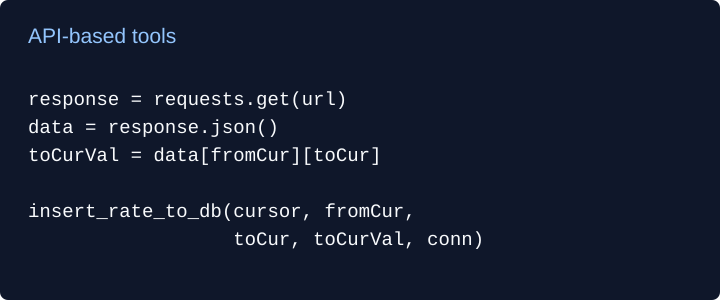
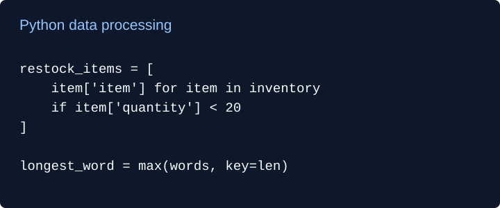
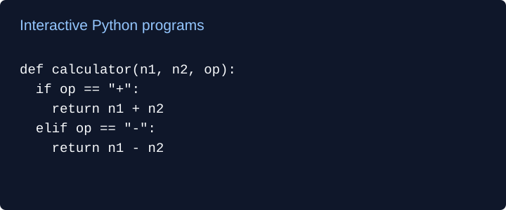

These entries describe the supplied notebook code. The notebooks have not been independently run or tested for this portfolio. Downloads contain source cells with saved outputs and notebook metadata removed.

Weather and currency API tools
A notebook with two API exercises: retrieving weather conditions and recording a Fahrenheit conversion in a text file, and looking up a currency exchange rate and saving it with a timestamp in SQLite.
Tools: Python, requests, JSON, SQLite, Google Colab secrets.
Setup: The weather exercise requires an OpenWeatherMap key in Colab secrets. The source needs review before a clean run, including its imports and temperature variable.
Download API tools notebook (.ipynb)

Data processing and API storage
Exercises analyzing temperatures and grades, calculating inventory values, processing lists and text, and adding matrices. Additional exercises retrieve jokes to a text file and save news headlines in SQLite with duplicate-headline handling.
Tools: Python, lists, dictionaries, requests, JSON, SQLite.
Setup: The news exercise requires a NewsAPI key in Colab secrets. Some cells depend on prior state and need review before running from a fresh session.
Download data processing notebook (.ipynb)

Interactive Python fundamentals
A collection of beginner programs: an arithmetic calculator, a menu-driven shopping cart, a two-player rock-paper-scissors game, and a Fibonacci sequence generator. An in-class weather simulation practices dictionaries using randomly generated weather, rather than live forecasts.
Tools: Python, functions, loops, conditionals, dictionaries, random.
Focus: User input, branching logic, quantities and totals, and sequence generation. These are learning exercises with input handling and game logic to refine.
Download Python fundamentals notebook (.ipynb)